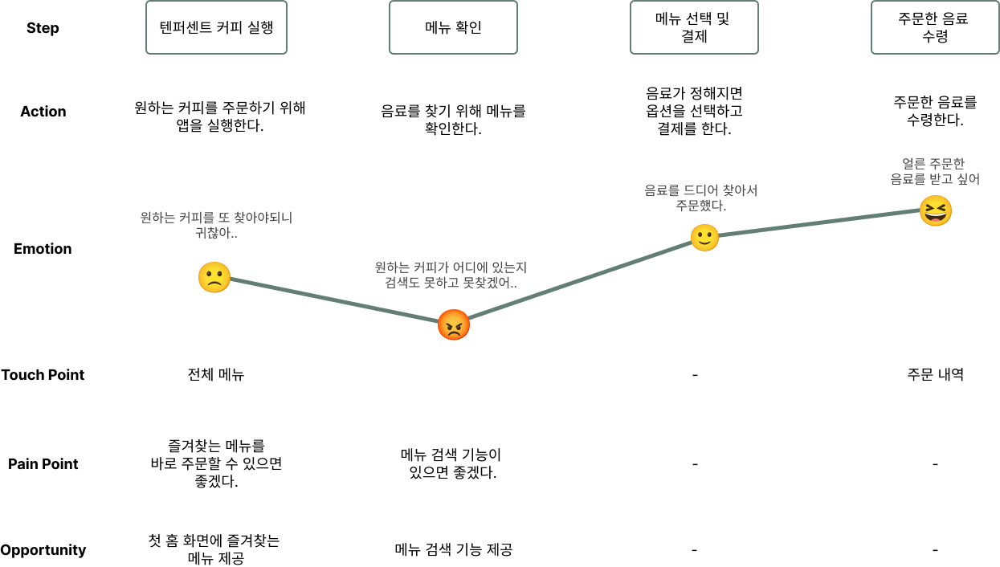
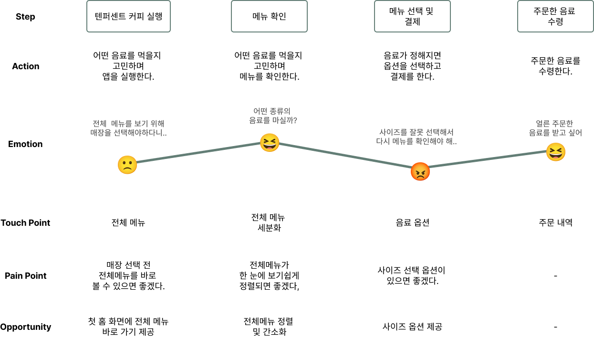

구성 및 목차
1. intro Page 1
2. Overview Page 3
3. Research Page 4
4. Persona Page 6
5. Journey Map Page 7
6.Design 상세 설명 Page 9
1. intro Page 1
2. Overview Page 3
3. Research Page 4
4. Persona Page 6
5. Journey Map Page 7
6.Design 상세 설명 Page 9
TENPERCENT COFFEE
본 프로젝트는 텐퍼센트 커피 어플의 기존 서비스를 재점검하고, 사용성 개선 및 브랜딩 강화를 통해 향후 시장 경쟁력을 확보하기 위해 기획되었습니다. 설문조사를 통해 기존 서비스 문제 분석 및 고객의 숨은 니즈를 발견하고, UX UI 개선을 통한 사용성 중대와 텐퍼센트 커피만의 고유한 브랜드 아이덴티티를 담아내는 것을 목표로 하였습니다.
텐퍼센트 커피는 스페셜티 커피 프랜차이즈 체인으로, 현재 시장에서는 다른 커피 프랜차이즈에 비해 상대적으로 낮은 시장 점유율을 가지고 있지만, 꾸준한 성장을 이루고 있습니다. 텐퍼센트 커피앱은 현재 성장 추세에 비해 다른 프랜차이즈 앱과 비교했을 때 다소 부족한 기능들로 인해 사용자의 불편함이 있었습니다.
- 즐겨찾는 음료를 저장 후 바로 주문 할 수 없는 번거로움.
- 매장 선택 전 전체 메뉴 확인 기능이 없음.
- 상품검색 기능 없음.
- 음료 사이즈 선택 옵션이 없어 음료 사이즈를 잘못 선택한 경우
메뉴로 돌아가야함.
- 소비자가 즐겨찾는 음료를 저장해서 바로 주문할 수 있는 기능 추가
- 매장 선택 전 바로 볼 수 있는 전체 메뉴 추가
- 한 눈에 보기 쉬운 UI로 메뉴 디자인 수정
- 음료 사이즈 옵션 기능 추가
| 스타벅스 | 투썸플레이스 | 메가커피 | 텐퍼센트커피 | |
|---|---|---|---|---|
| 즐겨찾는메뉴 저장 | O | O | O | X |
| 사이즈 선택 옵션 | O | O | X | X |
| 상품 검색 기능 | O | O | O | X |
| 매장 선택 전 전체 메뉴 확인 기능 | O | O | X | X |

경쟁사 분석을 통하여 도출한 부족한 기능 및 문제점들이 사용자 온라인 설문조사 결과와 거의 일치하였습니다. 특히 다른 경쟁사에 비하여 다소 부족한 기능들에 대한 불만사항을 확인 할 수 있었습니다.
즐겨찾는 커피를 미리 등록해놓고 바로 주문할 수 있으면 좋겠어요.
이름이자연
성별여성
나이27
주소부산 동구
직업사무직
커피섭취량
스마트폰 오더 빈도
직장 생활을 하는 이자연씨는 출근 전 커피를 마시면서 출근한다. 항상 가는 카페에 즐겨찾는 메뉴가 정해져 있어서 카페에서 근무하는 직원분들이 이자연씨가 오면 무엇을 주문할지 알고 있을 정도이다. 하지만 요즘 카페에 사람들의 수가 점점 증가하면서 이자연씨가 도착하면 바로 가져갈 수 있게 스마트폰으로 미리 주문을 하는데 즐겨찾는 메뉴를 항상 찾아야하는 번거러움을 느끼고 있다.
즐겨찾는 메뉴를 저장하고 바로 주문할 수 없어 불편하다.
상품 검색 기능이 없어 원하는 메뉴를 검색할 수 없다.
자주 찾는 음료를 저장 후 바로 주문 할 수 있으면 좋겠다.
상품 검색 기능이 있어 원하는 음료를 바로 찾을 수 있으면 좋겠다.
즐겨찾는 커피를 바로 주문할 수 있길 원하는 사용자
음료 주문 시 옵션이 좀 더 다양했으면 좋겠습니다.
이름김노을
성별남성
나이24
주소부산 해운대구
직업학생
커피섭취량
스마트폰 오더 빈도
대학생인 김노을씨는 카페의 새로운 메뉴나 다양한 메뉴를 시도해보는 것을 좋아합니다. 매장 선택 전에 음료를 먼저 확인하고 싶은데 매장 선택 후 메뉴를 확인해야하는 옵션이 김노을씨는 음료를 주문해야만 메뉴를 봐야한다는 느낌에 불편함을 느낍니다. 또한, 가장 큰 사이즈 음료를 가끔 시켜먹는 노을씨는 음료 주문시 사이즈를 잘못 선택하여 잘못된 사이즈를 주문하는 경우가 종종 발생하여 같은 메뉴의 경우, 주문 시 옵션에서 사이즈를 선택하면 좋겠다는 생각을 합니다.
매장 선택 전 전체 메뉴를 확인 할 수 없다.
같은 메뉴의 경우에 주문 시 음료 사이즈 선택 옵션이 없어 불편하다.
매장 선택 전 전체 메뉴를 바로 볼 수 있으면 좋겠다.
음료 주문 시, 사이즈 선택 옵션이 있으면 좋겠다.
음료 주문 시 옵션이 좀 더 다양하길 원하는 사용자

앱 실행 후 사용자들이 가장 먼저 만나는 홈 화면에
사용자의 맞춤 즐겨찾기, 매장 설정 등의 콘텐츠를 추가하였습니다.
선택한 메뉴를 주문 시 퍼스널 옵션에서 사이즈 선택을 할 수 있어
사이즈를 잘못 선택하여 다시 메뉴로 돌아가야하는 번거러움을 줄였습니다.